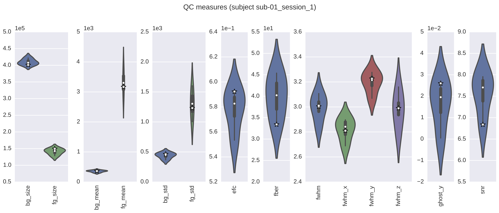
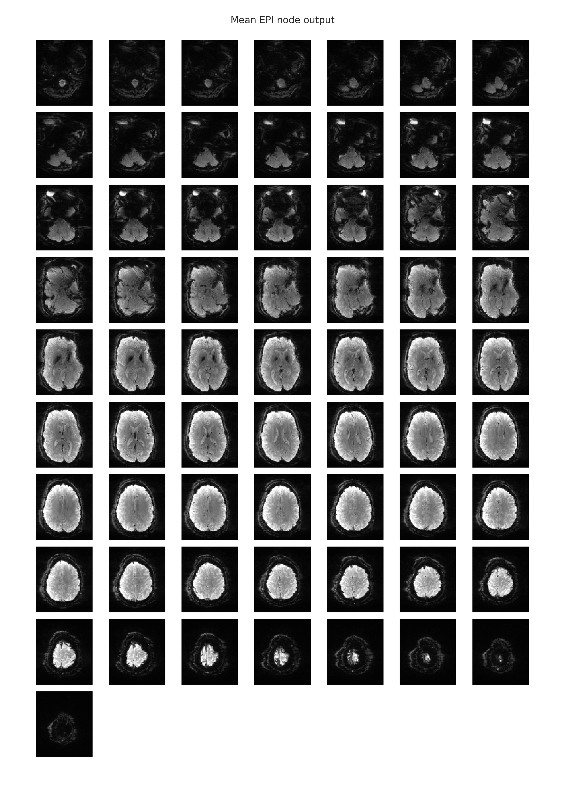
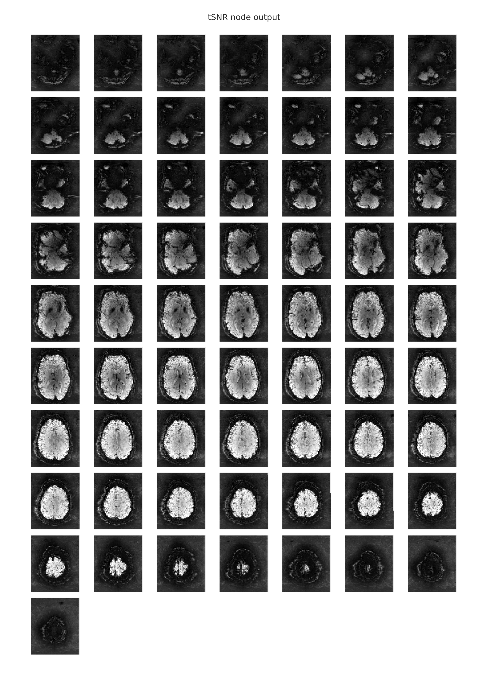
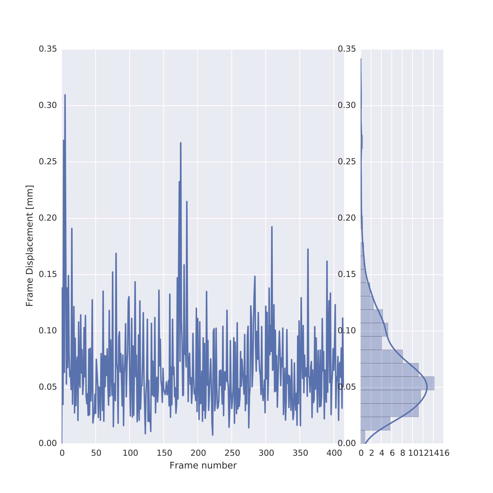

Various objective measures for MRI data quality have been proposed over the years. However, until now no software has allowed researchers to obtain all these measures in the same place with relative ease. The QAP package allows you to obtain spatial and anatomical data quality measures for your own data. Since no standard thresholds demarcating acceptable from unacceptable data are currently existent, you can then compare your data to normative distributions of measures obtained from the ABIDE, CoRR and NFB datasets.
For more information, please see our recent resting-state poster and associated code.
Table of Contents
- Installing the QAP Package
- Taxonomy of QA Measures
- Normative Metrics (ABIDE and CoRR)
- Pipeline Configuration YAML Files
- Subject List YAML Files
- Running the QAP Pipelines
- Running the QAP Pipelines on AWS Cloud Instances
- Merging Outputs
- Generating Reports
- The QAP Team
- References
Installing the QAP Package
System Requirements
- Any *nix-based operating system capable of running QAP will work, so long as it can run AFNI, and FSL.
- The total amount of free hard disk space required is 5.7 GB.
Application Dependencies
QAP requires AFNI and FSL to run. Links to installation instructions for AFNI and FSL are listed below:
If you are using a Debian-based Linux distribution, you can use apt-get to install FSL by first adding Neurodebian to the apt repository list:
wget -O- http://neuro.debian.net/lists/$(lsb_release -cs).us-nh.full | tee /etc/apt/sources.list.d/neurodebian.sources.list
apt-key adv --recv-keys --keyserver pgp.mit.edu 2649A5A9
apt-get update
apt-get install -y fsl-5.0-complete
We do not recommend using Neurodebian’s AFNI binary, as we have encountered difficulty using QAP with this binary.
Python Dependencies and QAP
QAP is compatible with Python 2, so you will first want to ensure that you are not using Python 3 before proceeding any further. The version number for Python should be visible at the top of the console window if you open a fresh Python interpreter with python in a Unix shell. If you are not using Python 2, make sure that your configuration is set up so that it is used instead of Python 3.
QAP depends on some visualization packages, which in turn require that some additional system-level dependencies be installed. Under Ubuntu 14.04, you can install these system-level dependencies by typing:
sudo apt-get build-dep python-imaging
sudo apt-get install libjpeg8 libjpeg62-dev libfreetype6 libfreetype6-dev xvfb
To install QAP you will the Python package manager, pip, which is included by default on many systems. If your system does not already have this you will need to install it by following the directions here. On Debian-based systems in particular (such as Ubuntu), you may need to install pip with the following command:
sudo apt-get install python-pip
In addtion to the visualization packges above, QAP requires Numpy, Scipy, Nipype, Nibabel, Nitime, PyYAML, and pandas to run. If you have pip, you may install all of these, the visualization packages, and QAP itself by typing in the command below:
pip install qap
If you plan on using the write_graph option to write out an illustration of the workflow used by QAP (see below), you will also need to install graphviz from here as well as pygraphviz, which can be installed by typing:
pip install pygraphviz
Taxonomy of QA Measures
There are three sets of measures that can be run using the QAP software package:
- Spatial anatomical measures
- Spatial functional measures, which use the mean functional image.
- Temporal functional measures, which use the functional timeseries.
The following sections will describe the measures belonging to these sets in detail. The label used in the CSV files output by QAP is designated by brackets after the long form measure name.
To determine subjects that are outliers for any of these measures, run QAP on an array of subjects and take 1.5x or 3x the inter-quartile range.
Spatial Anatomical
- Signal-to-Noise Ratio (SNR) [snr]: The mean intensity within gray matter divided by the standard deviation of the values outside the brain. Higher values are better 1.
- Contrast to Noise Ratio (CNR) [cnr]: The mean of the gray matter intensity values minus the mean of the white matter intensity values divided by the standard deviation of the values outside the brain. Higher values are better 1.
- Foreground to Background Energy Ratio [fber]: The variance of voxels inside the brain divided by the variance of voxels outside the brain. Higher values are better.
- Percent Artifact Voxels (Qi1) [qi1]: The proportion of voxels outside the brain with artifacts to the total number of voxels outside the brain. Lower values are better 2.
- Smoothness of Voxels (FWHM) [fwhm, fwhm_x, fwhm_y, fwhm_z]: The full-width half maximum (FWHM) of the spatial distribution of the image intensity values in voxel units. Lower values are better 3.
- Entropy Focus Criterion (EFC) [efc]: The Shannon entropy of voxel intensities proportional to the maximum possibly entropy for a similarly sized image. Indicates ghosting and head motion-induced blurring. Lower values are better 4.
- Summary Measures [fg_mean, fg_std, fg_size, bg_mean, bg_std, bg_size, gm_mean, gm_std, gm_size, wm_mean, wm_std, wm_size, csf_mean, csf_std, csf_size]: Intermediate measures used to calculate the metrics above. Mean, standard deviation, and mask size are given for foreground, background, white matter, and CSF masks.
Spatial Functional
- Ghost to Signal Ratio (GSR) [ghost_x, ghost_y or ghost_z]: A measure of the mean signal in the areas of the image that are prone to ghosting based off the phase encoding direction. Lower values are better. 5
- Summary Measures [fg_mean, fg_std, fg_size, bg_mean, bg_std, bg_size]: Intermediate measures used to calculate the metrics above. Mean, standard deviation, and mask size are given for foreground and background masks.
Temporal Functional
- Foreground to Background Energy Ratio [fber]: The variance of voxels inside the brain divided by the variance of voxels outside the brain. Higher values are better.
- Smoothness of Voxels (FWHM) [fwhm, fwhm_x, fwhm_y, fwhm_z]: The full-width half maximum (FWHM) of the spatial distribution of the image intensity values in voxel units. Lower values are better 3.
- Entropy Focus Criterion (EFC) [efc]: The Shannon entropy of voxel intensities proportional to the maximum possibly entropy for a similarly sized image. Indicates ghosting and head motion-induced blurring. Lower values are better 4.
- Standardized DVARS [dvars]: The average change in mean intensity between each pair of fMRI volumes in a series scaled to make comparisons across scanning protocols possible. Lower values are better 6.
- Outlier Detection [outlier]: The mean count of outliers found in each volume using the 3dToutcount command from AFNI. Lower values are better 7.
- Global Correlation [gcorr]: The average correlation of all pairs of voxel time series inside of the brain. Illustrates differences between data due to motion/physiological noise/imaging artifacts (such as signal bleeding). Values closer to zero are better. 8
- Median Distance Index [quality]: The mean distance (1 – spearman’s rho) between each time point’s volume and the median volume using AFNI’s 3dTqual command. Lower values are better 7.
- Mean RMSD [mean_fd]: A measure of subject head motion, which compares the motion between the current and previous volumes. This is calculated by summing the absolute value of displacement changes in the x, y and z directions and rotational changes about those three axes. The rotational changes are given distance values based on the changes across the surface of a 80mm radius sphere. Lower values are better 910.
- Number of volumes with FD greater than 0.2mm [num_fd]: Lower values are better.
- Percent of volumes with FD greater than 0.2mm [perc_fd]: Lower values are better.
Normative Metrics
We have gathered QA metrics for two multi-site resting-state datasets: ABIDE (1,110+ subject across 20+ sites) and CoRR (1,400+ subjects across 30+ sites). The QA metrics for these datasets have been made publicly available. They can be used for a variety of applications, for instance, as a comparison to the QA results from your own data. For each link below, please right click and select save as:
- ABIDE - Anatomical Measures
- ABIDE - Functional Measures
- CoRR - Anatomical Measures
- CoRR - Functional Measures
- NFB - Anatomical Measures
- NFB - Functional Measures
Pipeline Configuration YAML Files
Certain pre-processed files derived from the raw data are required to calculate the measures described above. By default, the QAP software package will generate these pre-requisite files given the raw data you have (anatomical/structural scans for the anatomical measures, 4D anatomical+timeseries scans for the functional). A preprocessing pipeline will be constructed to create these files, and this pipeline can be customized with a pipeline configuration YAML file you provide.
Some examples of customizable features include segmentation thresholds for anatomical preprocessing, and the option to run slice timing correction for functional preprocessing. Computer resource allocation can also be customized using the configuration files, such as dedicating multiple cores/threads to processing.
Templates for these files are provided in the /configs folder in the QAP main repository directory. Below is a list of options which can be configured for each of the pipelines.
General (both types)
- num_cores_per_subject: Number of cores (on a single machine) or slots on a node (cluster/grid) per subject (or per instance of the pipeline). Slots are cores on a cluster/grid node. Dedicating multiple nodes allows each subject’s processing pipeline to run certain operations in parallel to save time.
- num_subjects_at_once: Similar to num_cores_per_subject, except this determines how many pipelines to run at once.
- output_directory: The directory to write output files to.
- working_directory: The directory to store intermediary processing files in.
- write_all_outputs: A boolean option to determine whether or not all files used in the process of calculating the QAP measures will be saved to the output directory or not. If True, all outputs will be saved. If False, only the csv file containing the measures will be saved.
- write_report: A boolean option to determine whether or not to generate report plots and a group measure CSV (see below). If True, plots and a CSV will be produced; if False, QAP will not produce reports.
- write_graph: A boolean option to determine whether or not to write a representation of the graph that corresponds to the workflow that will be applied to each of the subjects. If True, it uses the write_graph() function of nipype Workflows to save the corresponding graph in dot format. Note that you will need to have grapviz/pygraphviz installed (see installation section above), otherwise you will receive an error.
Anatomical pipelines
- template_brain_for_anat: Template brain to be used during anatomical registration, as a reference.
Functional pipelines
- start_idx: This allows you to select an arbitrary range of volumes to include from your 4-D functional timeseries. Enter the number of the first timepoint you wish to include in the analysis. Enter 0 to include the first volume.
- stop_idx: This allows you to select an arbitrary range of volumes to include from your 4-D functional timeseries. Enter the number of the last timepoint you wish to include in the analysis. Enter End to include the final volume. Enter 0 in start_idx and End in stop_idx to include the entire timeseries.
- slice_timing_correction: Whether or not to run slice timing correction - True or False. Interpolates voxel timeseries so that sampling occurs at the same time.
- ghost_direction: Allows you to specify the phase encoding (x - RL/LR, y - AP/PA, z - SI/IS, or all) used to acquire the scan. Omitting this option will default to y.
Make sure that you multiply num_cores_per_subject and num_subjects_at_once for the maximum amount of cores that could potentially be used during an anatomical or functional pipeline run.
Subject List YAML Files
Providing Raw Data
The QAP pipelines take in subject list YAML (.yml) files as an input. The filepaths to your raw data are defined in these subject lists, and these YAML files can be easily generated using the qap_raw_data_sublist_generator.py script included in the QAP software package. After installing the QAP software package, this script can be run from any directory. This subject list generator script assumes a specific directory structure for your input data:
/data_directory/site_name/subject_id/session_id/scan_id/file.nii.gz
Where subject_id is replaced with a subject ID code, session_id is replaced with a folder of the form session_<number>, and scan_id is replaced with anat_<number>, func_<number> or rest_<number> depending on the scan type. To make the script parse the above directory structure and generate the subject list YAML file, invoke the following command:
qap_raw_data_sublist_generator.py {absolute path to site_name directory} {path to where the output YAML file should be stored} {the scan type- can be 'anat' or 'func'}
These subject lists can also be created or edited by hand if you wish, though this can be cumbersome for larger data sets. For reference, an example of the subject list format follows:
'1019436':
session_1:
anatomical_scan:
anat_1: /test-data/site_1/1019436/session_1/anat_1/mprage.nii.gz
'2014113':
session_1:
anatomical_scan:
anat_1: /test-data/site_1/2014113/session_1/anat_1/mprage.nii.gz
'3154996':
session_1:
anatomical_scan:
anat_1: /test-data/site_1/3154996/session_1/anat_1/mprage.nii.gz
Note that anatomical_scan is the label for the type of resource (in this case, anatomical raw data for the anatomical spatial QAP measures), and anat_1 is the name of the scan. There can be multiple scans, which will be combined with subject and session in the output.
Providing Already Pre-Processed Data
Alternatively, if you have already preprocessed some or all of your raw data, you can provide these pre-existing files as inputs directly to the QAP pipelines via your subject list manually. The QAP pipelines will then use these files and skip any pre-processing steps involved in creating them, saving time and allowing you to use your own method of processing your data. If these files were processed using the C-PAC software package, there is a script named qap_cpac_output_sublist_generator.py which will create a subject list YAML file pointing to these already generated files. Note that this script will only work for C-PAC runs where FSL is used. Its usage is as follows:
qap_cpac_output_sublist_generator.py {absolute path to the C-PAC output pipeline directory} {path to where the output YAML file should be stored} {the scan type- can be 'anat' or 'func'} {the session format- can be '1','2', or '3', whose corresponding formats are described in more detail below}
The values for the session format argument can either be:
1 - For output organized in the form: /output/pipeline/subject_id/session_id/output/
2 - For output organized in the form: /output/pipeline/subject_id/output/
3 - For output organized in the form: /output/pipeline/subject_session/output/
For example, if C-PAC results were stored in participant directories of the form /home/wintermute/output/pipeline_FLIRT/80386_session_1, you wanted to run anatomical measures, and you wanted to store the subject list in subj_list.yml, you would invoke:
qap_cpac_output_sublist_generator.py /home/wintermute/output/pipeline_FLIRT /home/wintermute/qap_analysis/subj_list.yml anat 3
Below is a list of intermediary files used in the steps leading to the final QAP measures calculations. If you already have some of these processed for your data, they can be included in the subject list with the label on the left. For example, if you’ve already deobliqued, reoriented and skull-stripped your anatomical scans, you would list them in your subject list YAML file like so:
anatomical_brain: /path/to/image.nii.gz
Anatomical Spatial measures workflow resources
- anatomical_reorient: anatomical (structural) scan that has been deobliqued and reoriented to RPI (.nii/.nii.gz)
- anatomical_brain: deobliqued & reoriented anatomical that has been skull-stripped (.nii/.nii.gz)
- flirt_affine_xfm: a warp matrix file output by FLIRT (.mat)
- flirt_linear_warped_image: the FLIRT-warped anatomical scan (.nii/.nii.gz)
- anatomical_csf_mask: segmentation mask of the anatomical scan’s CSF (.nii/.nii.gz)
- anatomical_gm_mask: segmentation mask of the anatomical scan’s gray matter (.nii/.nii.gz)
- anatomical_wm_mask: segmentation mask of the anatomical scan’s white matter (.nii/.nii.gz)
- qap_head_mask: a whole-skull binarized mask
In the QAP head mask workflow, we also mask the background immediately in front of the scan participant’s mouth. We do this to exclude breathing-induced noise from the calculation for the FBER QAP measure
Functional Spatial measures workflow resources
- func_motion_correct: motion-corrected 4-D functional timeseries (.nii/.nii.gz)
- mcflirt_rel_rms: if motion correction was performed using FSL’s MCFLIRT, use this to specify the path to the motion parameters file. Note that a motion parameters file will only be generated if you pass the -rmsrel flag to MCFLIRT. This resource requires that func_motion_correct also be defined manually (.rms)
- functional_brain_mask: a binarized mask of the functional scan (.nii/.nii.gz)
- mean_functional: a 3-D file containing the mean of the functional 4-D timeseries (.nii/.nii.gz)
Functional Temporal measures workflow resources
- func_motion_correct: motion-corrected 4-D functional timeseries (.nii/.nii.gz)
- functional_brain_mask: a binarized mask of the functional scan (.nii/.nii.gz)
- coordinate_transformation: the matrix transformation from base to input coordinates, produced during motion correction (.aff12.1D)
Note that these are complete lists- obviously, not all intermediary files are required if you choose to provide them. For example, if you provide the skull-stripped anatomical_brain, then anatomical_reorient would not be necessary, and the pipeline will skip all steps before skull-stripping. Alternatively, if you do not have the functional_brain_mask for either of the functional pipelines, providing the func_motion_correct file will allow the pipeline to create it for you. Having none of these will simply cause the pipeline to take in the original functional_scan and produce all of these files on its own.
Running the QAP Pipelines
There is a launch script for each of these measures, with each one featuring a similar interface. The Python-friendly YAML file format is used for the input subject list and pipeline configuration files. You can use these scripts from the command line, from within iPython, or with AWS Cloud instances. After installing the QAP software package, these scripts can be run from any directory:
- qap_anatomical_spatial.py
- qap_functional_spatial.py
- qap_functional_temporal.py
For command-line runs:
qap_anatomical_spatial.py --sublist {path to subject list YAML file} {path to pipeline configuration YAML file}
Executing any of the scripts with only the -h flag will produce a short help manual listing the command line arguments.
Running the QAP Pipelines on AWS Amazon Cloud Instances
With access to the Amazon Cloud, the QAP measures can be calculated for a large volume of subjects quickly.
Since there is substantial overlap between the software pre-requisites of QAP and C-PAC, it is recommended that you use the C-PAC AMI for your cloud instances. The C-PAC AMI can be used as a base onto which you can install QAP. Consult C-PAC’s cloud instructions for more information on how to use the C-PAC AMI, as well as more general information about AWS.
If you choose to use another AMI, you will need to install both QAP and its pre-requisites from scratch by following the instructions above. You will also need to configure Starcluster to use the mnt_config and cpac_sge plugins by following the instructions here.
Generating Your S3 Subject Dictionary File
The QAP software package comes with a script called qap_aws_s3_dict_generator.py, which can be run from any directory once the package is installed. This script requires you to install C-PAC before it will work properly. This script will create a YAML file containing the filepaths to the data stored in your AWS S3 bucket storage. You will need this dictionary YAML file to start an AWS Cloud run for QAP. This script takes in five input parameters:
- scan_type: anat or func, depending on which QAP measures you will be using the S3 subject dictionary for
- bucket_name: the name of your AWS S3 bucket
- bucket_prefix: the filepath prefix to the top level of your raw data directory on S3 storage
For example, if your S3 storage is arranged like so:
/data/project/raw_data/sub001/session_1/scan_1/file.nii.gz
/data/project/raw_data/sub001/session_1/scan_2/file.nii.gz
/data/project/raw_data/sub002/session_1/scan_1/file.nii.gz
Then the bucket_prefix would be:
/data/project/raw_data
- creds_path: the path to the file containing your AWS credentials
- outfile_path: the full filepath for the S3 subject YAML dictionary this script will create
Once this script is run, it will output the S3 dictionary YAML file, and it will give you the total number of subject-session-scans. Take note of this number, because you will need to list it in your SGE batch file (more below).
Setting Up Your SGE File
Sun Grid Engine (SGE) allows you to parallelize your cloud analyses by having each node in an HPC cluster run QAP on an individual subject. To use SGE on your AWS instance, create a new batch file in your favorite text editor and set up an SGE job in a format similar to below (with settings in curly brackets replaced and the appropriate qap utility used according to your needs):
#! /bin/bash
#$ -cwd
#$ -S /bin/bash
#$ -V
#$ -t 1-{number of subjects}
#$ -q all.q
#$ -pe mpi_smp {number of CPU cores to use}
#$ -e {absolute path to a file to store standard error from the terminal}
#$ -o /{absolute path to a file to store standard out from the terminal}
source /etc/bash.bashrc
ANAT_S3_DICT={absolute path to S3 subject dictionary YAML file}
ANAT_SP_CONFIG_FILE={absolute path to configuration YAML file}
echo "Start - TASKID " $SGE_TASK_ID " : " $(date)
# Run anatomical spatial qap
qap_anatomical_spatial.py --subj_idx $SGE_TASK_ID --s3_dict_yml $ANAT_S3_DICT $ANAT_SP_CONFIG_FILE
echo "End - TASKID " $SGE_TASK_ID " : " $(date)
Note that the mpi_smp environment is created by the cpac_sge Starcluster plug-in mentioned earlier. The cpac_env.sh script is a script containing all of the environmental variables used by AFNI and FSL. If you opt to not use the C-PAC AMI, you will need to create a comparable script and have the batch script source it. Submit the job to the SGE scheduler by typing:
qsub {path to the text file}
Merging Outputs
QAP generates outputs for each subject and session separately. To view a comprehensive summary for all the measures for all the subjects, you will need to merge these separate outputs into a single file. You can do this by running the following command:
qap_merge_outputs.py {path to qap output directory}
qap_merge_outputs.py will automatically determine if you have calculated anatomical spatial, functional spatial or functional temporal measures. The merged outputs will appear in a file named qap_anatomical_spatial_{qap output directory name}.csv in the directory from which the command is run.
Generating Reports
The report functions in the Quality Assessment Protocol allow you to generate optional reports which plot the measures for individual scans, as well as the for the entire group of scans or individuals. These reports aid the visual inspection of scan quality and can be generated by using the typical workflow commands.
In the case of the functional-spatial workflow, instead of just generating separate CSV files that contain each functional scan’s spatial QC metrics, the qap_functional_spatial.py script will also automatically generate a CSV file that contains the group-level metrics for all scans that were included as inputs. These group-level summary metrics will appear in a file named qap_functional_spatial.csv in the output directory designated in the config file.
In addition, you have the option of generating group-level reports with plots of all the various metrics that contain scores aggregated from all scans/individuals per metric. If this option is selected, there will also be a qap_functional_spatial.pdf file which will contain all of the group-level violin plots for each metric. The workflow will also generate report pdfs for each scan (e.g., qap_functional_spatial_sub-01.pdf). However, in this case, these reports will also contain any relevant slice mosaics. It is important to note that the individual-level violin plots are the same as those in the group reports, except for the addition of a star, or stars, that represents the score(s) for the scan from that session. The star in these plots denotes where the score for the scan for this individual falls in the distribution of all scores for scans that were included as inputs to the the functional-spatial workflow. If there are several scans per session for this individual, then the stars will be displayed adjacent to each other in the violin plot.
Report Examples
The following image is an example of a report which contains the QC metrics generated by the functional spatial workflow. The group-level data are depicted as violin plots, with each of the plots being a representation of the corresponding values from the column with the same name in the group-level CSV file. In this example, the star denotes where the score for this particular scan falls in the distribution for that metric. The actual value for this scan can be found in the appropriate column of the individual-level CSV file.

The following image is an example of the rendering of the mean EPI image which is provided in the individual-level functional-spatial report. This mean EPI was created by averaging the signal intensity values in each voxel over time. Hence, a 3-dimensional image was created from the 4-dimensional scan and was displayed as a slice mosaic. This image can be used to eyeball the overall quality of the scan, as it will be obvious if there were any large gaps in the image that might indicate that this scan is unusable.

The following image is an example of the rendering of the temporal signal-to-noise ratio information from a functional scan, which is provided in the individual-level functional-temporal report. The tSNR plot is similar to the mean EPI plot, in that both metrics reduce the 4-dimensional scan to a representative 3-dimensional volume that is then split and displayed as a stack of axial (horizontal) slices. In this case of the timeseries signal-to-noise ratio, the mean of each voxel’s timeseries is also computed and is then divided by the timeseries standard deviation. Hence, the tSNR plot shows the voxels in which one would expect to have SNR good enough for statistical analyses. Differences in tSNR are particularly important for comparing the results from region of interest (ROI) analyses, since any observed functional differences might actually be attributable to systematic differences in SNR across the regions being compared. You can learn more about the utility of tSNR plots for fMRI analyses here.

The following image is an example of the framewise displacement that occurred throughout the scan, which is also provided in the individual-level functional-temporal report. This is a temporal motion quality assurance metric and tracks head motions over time, making it easy to determine whether or not the data potentially suffered from significant corruption due to motion. For instance, it is possible to detect if the participant’s head was slowly sinking into the cushions in the head coil, or whether the participant was possibly restless or agitated, which would result in several position changes or movement spikes. The framewise displacement is a frame-by-frame representation of the differences between the BOLD signal intensity values of the n and n+1 time points, the n+1 and n+2 timepoints, and so on. The report page for framewise displacement in the functional scan includes both a frame-by-frame plot, as well as a histogram that can be used to visually determine what proportion of timepoints exceeded some pre-set movement threshold (e.g., 0.2 mm).

Below is an example of the slice mosaic that is provided as a part of the anatomical-spatial workflow. This image is a rendering of the axial slices from the anatomical scan and it is provided in the individual-level report. This slice mosaic can be used to eyeball the quality of the overall signal in the anatomical scan. It should be evident from visual inspection whether there were any problem areas where the signal distortion and/or dropout was large enough to warrant the exclusion of this anatomical can from subsequent analyses.

Downloading Data from Your S3 Bucket
If you ran QAP in the cloud, you will need to download the outputs from S3 before you can merge them. To do this, run the following command:
qap_download_output_from_S3.py {path to the S3 directory containing subject outputs} {path to AWS key file} {s3 bucket name} {type of measure to download} {directory to download to}
For example, if you wanted to obtain functional spatial measures from an S3 bucket named the_big_run with subject outputs in subjects/outputs you would use the following command.
qap_download_output_from_S3.py subjects/outputs /home/wintermute/Documents/aws-keys.csv the_big_run func_spatial /home/wintermute/qap_outputs
With the above commands, the outputs will be stored in a directory named qap_outputs in the user wintermute’s home folder. As with the pipeline commands from earlier, more information on this command’s usage can be obtained by running it with the -h flag.
The QAP Team
Primary Development
Cameron Craddock (Team Lead)
Steven Giavasis (Developer)
Daniel Clark (Developer)
Zarrar Shezhad (Developer)
John Pellman (User Support and Documentation)
Other Contributors
Chris Filo Gorgolewski
Craig Moodie
Oscar Esteban
References
-
Magnotta, V. A., & Friedman, L. (2006). Measurement of signal-to-noise and contrast-to-noise in the fBIRN multicenter imaging study. Journal of Digital Imaging, 19(2), 140-147. ↩ ↩2
-
Mortamet, B., Bernstein, M. A., Jack, C. R., Gunter, J. L., Ward, C., Britson, P. J., Meuli, R., Thiran, J.P. & Krueger, G. (2009). Automatic quality assessment in structural brain magnetic resonance imaging. Magnetic Resonance in Medicine, 62(2), 365-372. ↩
-
Friedman, L., Glover, G.H., Krenz, D., Magnotta, V., First, B., 2006. Reducing Inter-Scanner Variability of Activation in a Multicenter Fmri Study: Role of Smoothness Equalization. Neuroimage 32, 1656-1668. ↩ ↩2
-
Atkinson D, Hill DL, Stoyle PN, Summers PE, Keevil SF (1997). Automatic correction of motion artifacts in magnetic resonance images using an entropy focus criterion. IEEE Trans Med Imaging. 16(6):903-10. ↩ ↩2
-
Giannelli, M., Diciotti, S., Tessa, C., & Mascalchi, M. (2010). Characterization of Nyquist ghost in EPI-fMRI acquisition sequences implemented on two clinical 1.5 T MR scanner systems: effect of readout bandwidth and echo spacing. Journal of Applied Clinical Medical Physics, 11(4). ↩
-
Nichols, T. (2012, Oct 28). Standardizing DVARS. Retrieved from http://blogs.warwick.ac.uk/nichols/entry/standardizing_dvars. ↩
-
Cox, R.W. (1996) AFNI: Software for analysis and visualization of functional magnetic resonance neuroimages. Computers and Biomedical Research, 29:162-173. ↩ ↩2
-
Saad, Z.S., Reynolds, R.C., Jo, H.J., Gotts, S.J., Chen, G., Martin, A., Cox, R.W., (2013). Correcting Brain-Wide Correlation Differences in Resting-State Fmri. Brain Connect 3, 339-352. ↩
-
Jenkinson, M., Bannister, P., Brady, M., & Smith, S. (2002). Improved optimization for the robust and accurate linear registration and motion correction of brain images. Neuroimage, 17(2), 825-841. ↩
-
Yan CG, Cheung B, Kelly C, Colcombe S, Craddock RC, Di Martino A, Li Q, Zuo XN, Castellanos FX, Milham MP (2013). A comprehensive assessment of regional variation in the impact of head micromovements on functional connectomics. Neuroimage. 76:183-201. ↩